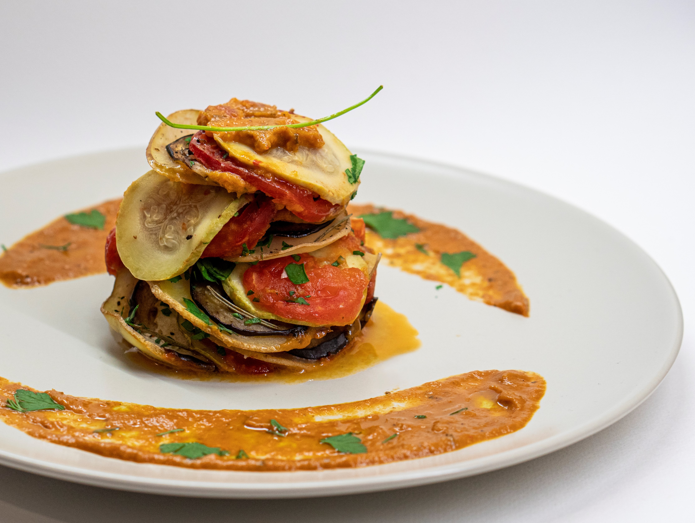

VitaNutri
Recetas Mediterráneas
Ensalada Caprese

Ingredientes:
- Tomates frescos
- Mozzarella
- Albahaca fresca
- Aceite de oliva virgen extra
- Sal y pimienta al gusto
Pasos de preparación:
- Corta los tomates y la mozzarella en rodajas.
- Alterna las rodajas de tomate y mozzarella en un plato.
- Coloca hojas de albahaca entre las capas.
- Rocía con aceite de oliva, sal y pimienta al gusto.
- Sirve fresco.
Pasta con Pesto Genovés

Ingredientes:
- Pasta (preferiblemente tipo linguini)
- Albahaca fresca
- Queso parmesano
- Ajo
- Piñones
- Aceite de oliva virgen extra
- Sal y pimienta al gusto
Pasos de preparación:
- Cocina la pasta según las instrucciones del paquete.
- En una licuadora, mezcla albahaca, queso parmesano, ajo y piñones.
- Agrega aceite de oliva gradualmente hasta obtener una consistencia suave.
- Mezcla la salsa de pesto con la pasta cocida.
- Sirve con sal y pimienta al gusto.
Paella Valenciana

Ingredientes:
- Arroz bomba
- Pollo
- Conejo
- Tomate
- Pimiento
- Judía verde
- Azafrán
- Caldo de pollo
- Aceite de oliva virgen extra
- Sal al gusto
Pasos de preparación:
- En una paellera, sofríe pollo y conejo en aceite de oliva.
- Añade tomate, pimiento y judía verde.
- Cuando las verduras estén tiernas, agrega el arroz y rehoga.
- Incorpora el azafrán y el caldo de pollo caliente.
- Cocina a fuego medio hasta que el arroz esté en su punto.
Gazpacho Andaluz
Ingredientes:
- Tomates maduros
- Pepino
- Pimiento verde
- Cebolla
- Ajo
- Pan del día anterior
- Vinagre de jerez
- Aceite de oliva virgen extra
- Sal al gusto
Pasos de preparación:
- Trocea los tomates, pepino, pimiento, cebolla y ajo.
- Remoja el pan en agua y agrégalo a las verduras.
- Tritura todos los ingredientes en una batidora.
- Añade vinagre, aceite de oliva y sal al gusto.
- Refrigera antes de servir.
Ratatouille Provenzal

Ingredientes:
- Berenjena
- Calabacín
- Pimiento rojo
- Pimiento amarillo
- Cebolla
- Ajo
- Tomate
- Albahaca fresca
- Tomillo fresco
- Aceite de oliva virgen extra
- Sal y pimienta al gusto
Pasos de preparación:
- Corta todas las verduras en rodajas finas.
- En una fuente para horno, coloca las rodajas alternando las diferentes verduras.
- Condimenta con ajo picado, albahaca, tomillo, sal y pimienta.
- Rocía con aceite de oliva.
- Hornea hasta que las verduras estén tiernas.